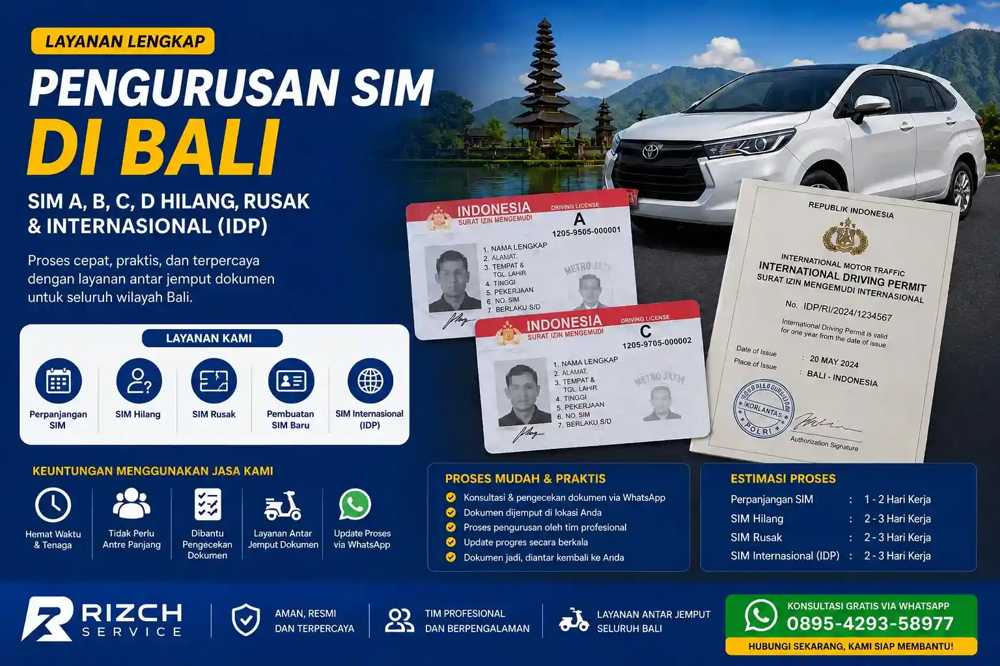

Syarat Perpanjang STNK di Bali
Ketahui syarat-syarat perpanjang STNK di Bali agar proses lebih lancar dan tidak bolak-balik ke Samsat.
Baca SelengkapnyaPanduan lengkap pengurusan dokumen, tips, dan layanan terbaru dari Rizch Bali.
Panduan paling populer yang sering dicari pengunjung Rizch Bali
Coba kata kunci lain atau lihat semua artikel di bawah.

Ketahui syarat-syarat perpanjang STNK di Bali agar proses lebih lancar dan tidak bolak-balik ke Samsat.
Baca Selengkapnya
Layanan pengurusan SIM A, C, D, hilang dan internasional di Bali cepat, aman, dan terpercaya.
Baca Selengkapnya
Ketahui syarat dan prosedur terbaru untuk mengurus SKCK di Bali secara online maupun offline.
Baca Selengkapnya
Langkah-langkah lengkap prosedur balik nama kendaraan bermotor di Bali dari awal sampai selesai.
Baca Selengkapnya
Panduan lengkap mengurus STNK hilang dengan syarat dan estimasi biaya terbaru di Bali.
Baca Selengkapnya
Syarat dan prosedur mutasi kendaraan keluar masuk Bali terbaru lengkap dengan estimasi waktu.
Baca SelengkapnyaArtikel terbaru seputar pengurusan dokumen di Bali
Pantau terus halaman ini untuk update artikel terbaru dari Rizch Bali.